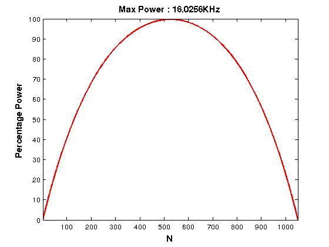

FileName : penalty
Contents
Description
This program calculates a penalty function profile, like the one shown below

If the power goes above the red line during the simulation of a GRAPE pulse the power is reset to the point on the redline just below it.
Value of div controls the shape of the penalty plot shown above, for example
Lower Value of div

Higher Value of div

Higher value makes the penalty plot more triangular, whereas lower values take the plot towards rectangular shape.
function [uprange,exitflag] = penalty(div,plength,askplot) global gra
Making div same for all the channels
if length(div)==1 for j=2:gra.m/2 div(j)=div(1); end end
Mathematical expression of penalty function makes uses of cosh function, which generates inverse umbrella shape. These values are multiplied by minus of max. amplitude to make it positive.
uprange=zeros(gra.N,1,gra.m/2); for j=1:gra.m/2 per_div(j)=(div(j)*gra.N)/100; x=linspace(1,gra.N/per_div(j),gra.N); x=x-mean(x); penal=cosh(x')-1; penal=penal/max(penal); Amax=(1/4/plength(j))*2*pi*99/100; uprange(:,:,j) = -Amax*(penal); uprange(:,:,j) = uprange(:,:,j)-min(uprange(:,:,j)); end
Plotting the Penalty profile only if aksplot='y'
exitflag=0; if askplot=='y' for j=1:gra.m/2 figure plot(uprange(:,:,j)/1000,'r','LineWidth',2) x1=xlabel('N'); y1=ylabel('Percentage Power'); t1=title(['Max Power : ' num2str(1/4/plength(j)/1000) 'KHz']); axis tight; axis([1 gra.N 0 100]) set(gca,'FontSize',10) set([x1 y1 t1],'FontSize',12,'FontWeight','Bold') end reply = input('Do you want to continue? Y/N: ', 's'); if (reply=='n' || isempty(reply)) exitflag=1; end end